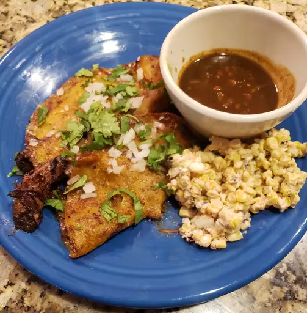

Beef Tacos

Description:
This is my take on what is currently the world's most trendy taco recipe.
Seriously, it's blowing up everywhere and when you make these you're going
to understand what all the fuss is about. Start with a batch of my Beef
Birria and then combine this super savory, aromatic consomé with amazing
beef and cheese tacos to take it up to another level.
Ingredients:
For the Consomé:
- 2 cups reserved sauce from Beef Birria recipe
- 1 cup chicken broth
- ¼ cup diced carrots
- ¼ cup diced celery
- ½ cup diced cabbage
For the Tacos:
- 2 cups shredded Beef Birria
- 3 tablespoons reserved beef fat from Beef Birria recipe, or more as needed
- 8 (5 inch) corn tortillas
- 2 cups freshly grated Monterey Jack cheese
- 4 tablespoons chopped white onion, or to taste
- 4 tablespoons chopped fresh cilantro, or to taste
- 1 medium lime, cut into 4 wedges
Steps:
-
Stir reserved beef birria sauce, chicken broth, carrots, celery, and cabbage
together in a saucepan over high heat; bring to a simmer. Reduce heat to
medium-low and simmer, occasionally brushing the caramelized bits (side fond)
off the side with the hot liquid, until vegetables are nice and tender and consomé
has reached desired consistency, about 20 minutes. Reduce heat to low and keep
hot while you prepare the tacos.
-
Heat some reserved beef fat in a large skillet over medium heat until melted.
Add 2 tortillas and toss with a spatula until generously coated in fat. Toast
briefly until golden brown, then cover with Monterey Jack cheese and some shredded
beef. Drizzle each taco with about 1 tablespoon consomé liquid, then top with
white onion and cilantro.
-
Fold tacos in half and press gently. Continue to cook, flipping back and forth,
until browned and crispy, 2 to 3 minutes. Transfer to a plate and repeat to make
remaining tacos, adding more fat if necessary.
-
Ladle consomé into a bowl and garnish with remaining white onions and cilantro.
Squeeze lime wedges into consomé and serve with tacos.
Odin Recipes main page